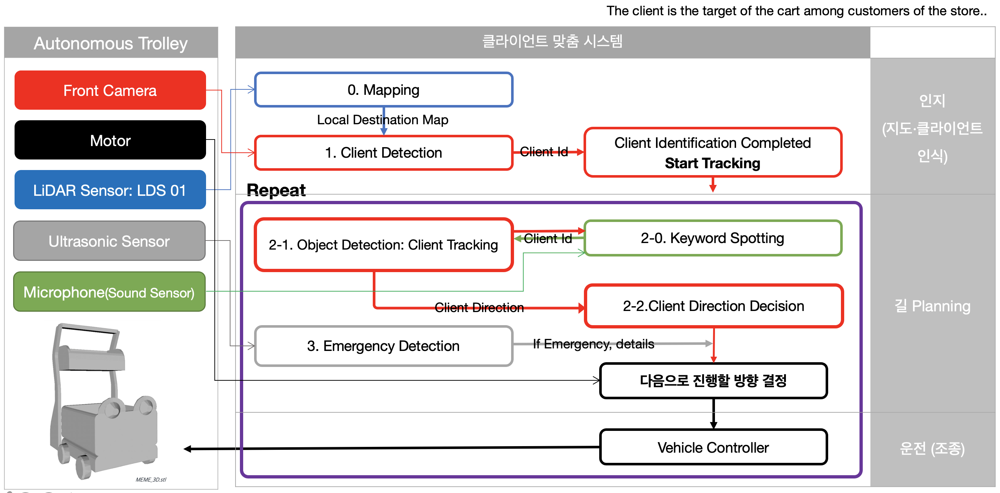

✨ Project Overview
‼️ Key Features
- Object Tracking System with YOLOv5 & DeepSORT
- Keyword Spotting: RNN model on word “미미야”
- Realtime Location Track with LiDAR Sensor
- Emergency Detection with ultrasonic Sensor
- Embedding System
⚒️ System Architecture

🛎️ Quick Start
본 시스템은 Ubuntu 18.04, ROS Melodic 환경에서 작동됩니다. 다음과 같은 라이브러리 설치가 필요합니다.
- Python 3버전 이상
- numpy
- scipy
- opencv-python
- sklearn
- torch ≥ 1.7
- torchvision ≥ 0.1
- pillow
- vizer
- edict
- Clone this repository & install requirements
git clone https://github.com/MEME-Phoenix/MEME.git
pip install -U -r requirements.txt #위 requirements 설치
- Download YOLOv3 parameter
cd detector/YOLOv3/weight/
wget https://pjreddie.com/media/files/yolov3.weights
wget https://pjreddie.com/media/files/yolov3-tiny.weights
cd ../../../
- Download DeepSORT parameters ckpt.t7
$ cd deep_sort/deep/checkpoint
# download ckpt.t7 from
https://drive.google.com/drive/folders/1xhG0kRH1EX5B9_Iz8gQJb7UNnn_riXi6 to this folder
$ cd ../../../
- Compile nms module
cd detector/YOLOv3/nms
sh build.sh
cd ../../..
- Rum Demo
$ usage: python3 train.py VIDEO_PATH
[--source 0] #실시간
[--source [mp4 file name]] #영상 첨부시
Note: If you’re using Linux Bash for Windows, see this guide or use node from the command prompt.
👥 Contributors & Blogs
- 한지수 @JisuHann
- 박지윤 @jiyoonpark0207
- 김채원 @cwkim0314
🔭 References
- Object Tracking
- Object Tracking(https://github.com/mikel-brostrom/Yolov5_DeepSort_Pytorch)
- Simple Online and Realtime Tracking with a Deep Association Metric(https://arxiv.org/abs/1703.07402)
- YOLOv4: Optimal Speed and Accuracy of Object Detection(https://arxiv.org/pdf/2004.10934.pdf)
- Keyword Spotting
- Embedding System
🏆 Awards & Patents
- 2021 특허 출원 완료(P2021-0069KR)
- 2021 한국정보처리학회 논문 게재
- 2020 캡스톤경진대회 창업아이디어 부문 우수상
- 2021 캡스톤디자인프로젝트 포스터세션 최우수상
- 2021 SW인재페스티벌 이화여자대학교 대표로 참가, 42팀 중 인기상 수상 메타버스 발표 영상
License
Copyright (c) 2021 MEME-Phoenix See the file license.txt for copying permission. LICENSE를 참고하세요.